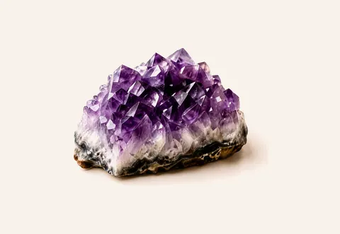
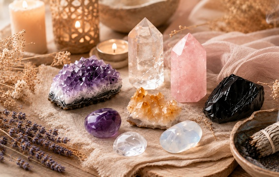
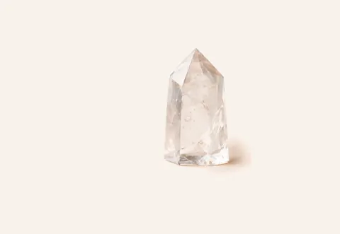
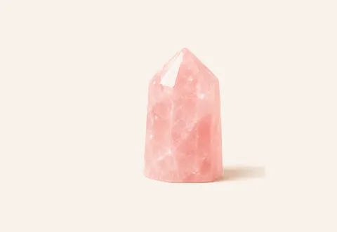
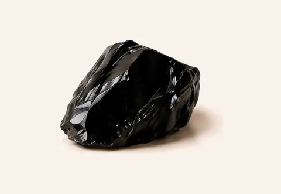
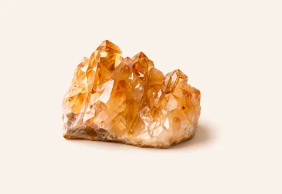
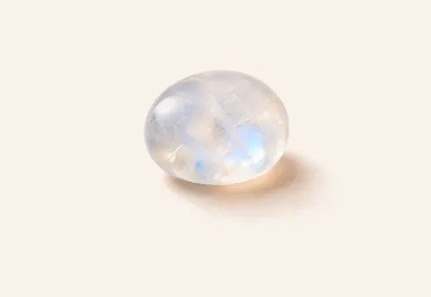
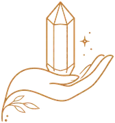
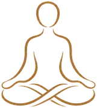
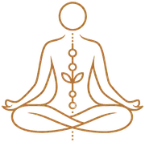

Amethyst
Often chosen for quiet reflection, evening practice and a calm visual focus.
Reflection · CalmBeginner Meditation Guide
A practical guide to choosing a meditation crystal, setting an intention and building a simple, mindful routine.
Crystals can serve as tactile reminders to slow down, return to your breath and stay connected to the purpose of your practice.
The traditional associations below are offered for reflection and personal ritual—not as medical claims.

There is no single “correct” meditation stone. Choose one whose color, texture or traditional meaning supports the intention you want to remember during practice.

Often chosen for quiet reflection, evening practice and a calm visual focus.
Reflection · Calm
A versatile choice for holding one clear intention throughout the session.
Clarity · Intention
Traditionally associated with compassion, gratitude and a gentle heart-centered practice.
Compassion · Gratitude
Its weight and dark surface can provide a steady tactile anchor for grounding.
Grounding · Focus
Commonly selected for morning intention-setting, confidence and purposeful action.
Motivation · Purpose
A reflective stone often linked with transitions, intuition and new beginnings.
Reflection · ChangeKeep the method simple: use the crystal as a physical cue for attention rather than something you must experience in a particular way.

Rest it comfortably in one or both hands and notice its temperature, weight and texture.

Set the crystal in front of you as a visual anchor if holding it feels distracting.

Use a short phrase such as “return to the breath” or “respond with patience.”
Take one final breath, put the stone down carefully and note how the session felt.
This beginner routine works with any smooth, comfortably sized crystal. Sit somewhere stable and stop if you feel uncomfortable.
Pick one realistic focus for the session, such as patience, gratitude or concentration.
Hold the stone loosely and follow the natural rhythm of each inhale and exhale.
Notice the crystal’s surface and gently bring your attention back without judging your thoughts.
Silently repeat the phrase you chose and notice whether its meaning feels different.
Open your eyes, place the crystal down and write one sentence about the practice.
The practical value is often in the ritual: a consistent object can help signal the beginning of practice and remind you of the intention you selected.
Texture and weight provide a physical point to return to when attention wanders.
Choosing one stone can make the purpose of a session easier to remember.
Repeating the same setup can help create a recognizable mindfulness routine.
A stone may connect the practice with a memory, value or symbolic association.
Color and shape can offer a simple focal point for open-eye meditation.
Cleaning can be both practical care and a personal reset ritual. Always check the mineral before using water, salt or direct sunlight.
Remove dust with a clean, dry cloth. This is a safe first step for most polished stones.
A bell, gentle sound or a few slow breaths can mark the beginning of a fresh practice.
Place the stone near a window overnight, protected from weather and sudden temperature changes.
Strong direct sun may fade stones such as Amethyst and Rose Quartz over time.
Some minerals are porous, soft or reactive. When unsure, keep them dry.
Use a soft pouch or divided box to reduce scratches and edge damage between sessions.
Popular choices include Amethyst for a quiet reflective practice, Clear Quartz for intention setting, Rose Quartz for self-compassion, Black Obsidian for grounding, Citrine for motivation and Moonstone for reflection. The best choice is one that feels comfortable and supports the purpose of your session.
Choose one stone, set a simple intention, hold it comfortably or place it nearby, focus on slow breathing for five to ten minutes and finish by noting how the practice felt.
You can hold a crystal in one or both hands, place it in front of you as a visual focus or arrange a few stones around your meditation space. Avoid placing heavy, sharp or unstable stones on the body.
Many people clean or reset a stone as a mindful ritual. A dry soft cloth, sound or indirect moonlight are gentle options. Check the stone type before using water, salt or sunlight.
No. Crystal meditation is a personal mindfulness practice and is not a substitute for professional medical or mental health advice, diagnosis or treatment.
Continue Exploring
Learn about traditional meanings, chakra associations and zodiac stones, or explore custom crystal bracelets for a retail or private label collection.
Nature’s energy companion
Premium crystal quality
Pure and calming support
A meaningful wellness choice